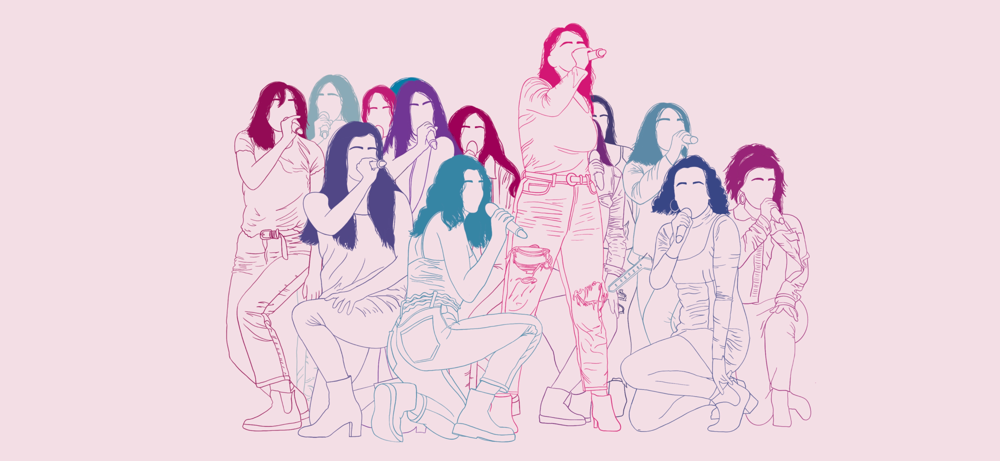

The Sopranos A Cappella
At the University of Michigan
Home

Since 2001, The Sopranos (affectionately known as The Sops) have been a tight-knit, fun-loving, talented group of ladies. With unique arrangements and powerhouse vocalists, this all female University of Michigan A Cappella Group is a force to be reckoned with.